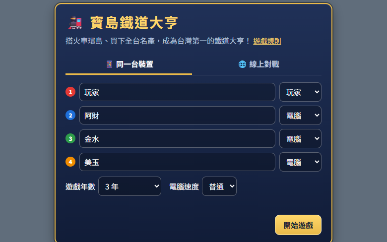

AI 営業アシスタント（企業向けデモ）
2026.10 – 現在｜MCT Japan
日本の製造業・自動車業界の複数のお客様向けに、受注や仕様書管理などの業務をカバーする AI 営業アシスタントのデモを制作。
- お客様ごとの業務フローに合わせた画面設計・調整
- 共通のベース版から各社専用のデモを短期間で展開
- Azure へデプロイし、お客様が実際に操作できる環境を提供
ソフトウェアエンジニア｜Java・Web・AI 支援開発
メールで連絡する agenga.chaos@gmail.com GitHub
システム開発経験は約 4 年半（台湾で 2021 年から、日本で 2022 年 12 月から）。銀行、官公庁、船舶管理、農業補助金などの業務システムに携わってきました。設計からテスト・デプロイまで一貫して担当でき、日本語と中国語でチーム間の調整も行えます。
2026
2026.10 – 現在｜MCT Japan
日本の製造業・自動車業界の複数のお客様向けに、受注や仕様書管理などの業務をカバーする AI 営業アシスタントのデモを制作。
2026.05 – 現在｜MCT Japan｜担当工程：基本設計～結合試験
農業法人・就農者の登録から応募申請、審査、助成金交付申請までを一元管理する Web システム。
2026.05 – 2026.08｜MCT Japan
AI アシスタント（Claude など）が MCP 経由で、日本企業向けワークフロー承認 SaaS の申請を照会・起票・提出・承認できるようにする開発。既存の VB.NET WebForms とは別に ASP.NET Core の API を構築し、Python の MCP サーバーから呼び出す構成。
2026.05
2025
2025.09 – 2026.04｜スリーティソフト｜チーム 15 名｜担当工程：詳細設計～結合試験
既存の C# システムを Java・React で刷新。
2025
2024
2024.12 – 2025.08｜スリーティソフト｜チーム 15 名｜担当工程：基本設計～単体試験
ライセンス期限に伴う基盤更新と構成の見直し。
2024.08 – 2024.11｜スリーティソフト｜チーム 15 名｜担当工程：製造～単体試験、運用保守
情報管理システムの保守および基盤更新対応。
2023
2023
2022
2022.12 – 2024.07｜スリーティソフト｜チーム 15 名｜担当工程：詳細設計～結合試験
既存システムの新バージョン開発。
2022.12
2021
2021.01 – 2021.06｜チーム 30 名｜担当工程：詳細設計～単体試験
海外情報部に所属し、海外支店の業務要件に対応。新人研修後は主に香港支店の口座開設システムのリリースと、口座開設・入金・送金機能の保守および追加開発を担当。
2020
2020.06
2020.04
2019
2019.09 – 2020.01
学生がチームでボードゲームを 1 つ作り上げることを目標とする授業。議論の方向づけと適切な助言を担当し、8 チームすべてがボードゲームを完成させました。
2019.06 – 2020.01
Web ページのデバッグを中心に担当し、Web の構成について一定の理解を得ました。多くの協業を通じて、業界のコミュニケーション、開発フロー、エンジニアに求められる力を学びました。
2018
2018
2018
大学
国立中央大学 在学中

台湾の鉄道を舞台にしたオリジナルのすごろく型ボードゲーム（Web）。サイコロで鉄道を一周しながら各駅の名産物件を買い、年末の決算で収益を得て、最終的に総資産が最も多い人が勝ち。1～4 人で同じ端末で遊ぶか CPU と対戦でき、4 桁のルームコードでオンライン対戦も可能（WebRTC の P2P でサーバー不要、切断時は CPU が代打）。飛行機・フェリー、6 つの離島マップ、買収カードなどのルールも実装。ビルド不要の純粋な HTML／CSS／JavaScript。ゲーム内の言語は中国語です。
プレイする GitHubAndroid で AirPods を使うための個人用アプリ。AirPods の Bluetooth LE ブロードキャストを解析し、左右とケースのバッテリー、充電・装着状態を表示。ケースを開くと iPhone 風のカードを表示し、通知領域と 2 種類のホーム画面ウィジェットにも残量を表示します。root 不要。プロトコル解析はオープンソースの CAPod と LibrePods（GPL-3.0）を参考にしています。
GitHub
スマホで遊べるオンライン対戦のアヴァロン（ボードゲーム）。拡張役職、音声通話、文字起こし、AI による振り返りの書き出しに対応。担当：円卓とリーダー交代の画面、投票／クエストカードのダイアログ化、スマホのスリープ後の音声自動再接続、マイク許可が拒否された場合のフォールバック、止まったリクエストのタイムアウト、期限切れデータの削除、コントラストやタップ領域などのアクセシビリティ改善。
プレイする史料の整理、ナレーション（AI 音声）、3D 地図アニメーションまで AI を使って制作した歴史解説動画。実際の地形の 3D 地図を 1 枚使い、塗り分け・年号・字幕で 1 つの歴史を語ります。動画は中国語です。
行き詰まったとき、答えを教えるのではなく、次の一手の考え方を AI が 3 段階でヒントします。AI の推論は正解と照合し、誤っていれば表示しません。Claude、ChatGPT、Gemini など 6 社の API に対応し、写真からの問題取り込み、メモ、数字ロックモード、GitHub Releases からの自動更新も搭載。サードパーティのライブラリは不使用。
GitHubAndroid の漫画リーダーアプリ。Web ページを解析して作品と章を取得し、3 種類の閲覧モード、ズーム操作、フォロー作品の更新チェック（フォアグラウンドサービスでバックグラウンドでも継続）に対応。データはすべて端末内に保存。Product Flavors で複数バージョンを管理し、ビルド・署名検証・公開を一括で行うスクリプトも作成。

溯源由美株式会社のコーポレートサイトを、自作の WordPress テーマで再構築。EPS の元データから SVG ロゴを自前で変換し、デザイントークンで配色を管理して WCAG のコントラストを実測。日・英・簡体中文の 3 言語、OGP／meta の自動生成に対応。
SNS の投稿やストーリーのアーカイブを閲覧・分析する 1 ファイル構成の Web ツール。地図表示と AI 分析に対応。
Threads の投稿を「一般／商業」に分類して整理する、パーソナライズされたフィードの Android アプリ。